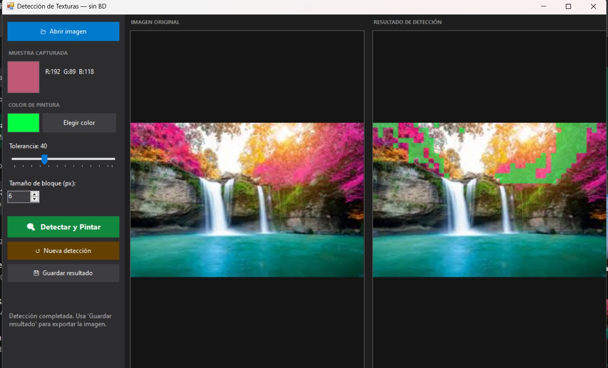
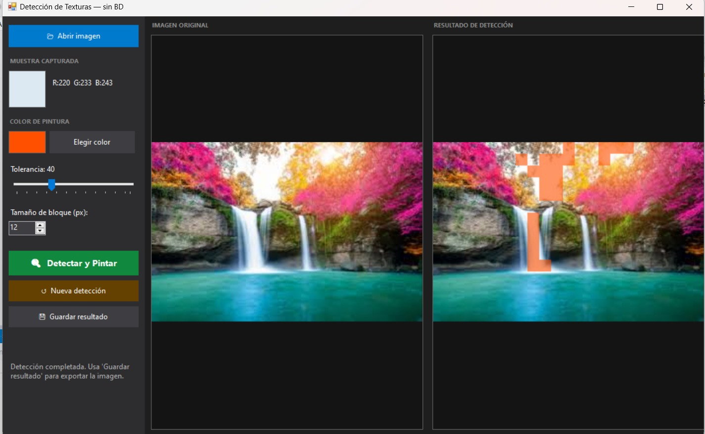
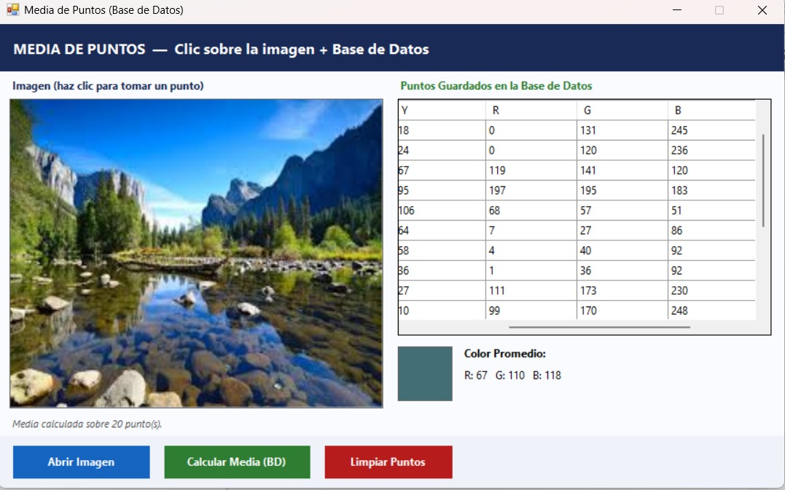

Actividades Individuales — Procesamiento de Imagenes
Josue David Monasterio Calizaya
Multimedia
Inciso A
Clasificacion de Texturas
Este ejercicio consiste en analizar una imagen a nivel de pixeles para identificar diferentes tipos de superficies,
como cesped, tierra o asfalto. Se aplican tecnicas de procesamiento digital similares a las usadas en imagenes
satelitales, permitiendo diferenciar zonas segun sus caracteristicas visuales.
Inciso B
Filtro de Suavizado
En este ejercicio se implementa un filtro de promedio utilizando una ventana de 3x3 pixeles. Este proceso reduce el ruido
de la imagen y suaviza los cambios bruscos de color, mejorando la calidad visual y facilitando el analisis posterior.
Inciso C
Cover — La Vaca Lola
Este ejercicio integra multimedia, combinando audio, animacion y modelado 3D. Se realizo un cover de la cancion
La Vaca Lola, sincronizando el movimiento del personaje con el ritmo de la musica, logrando una representacion
visual dinamica y atractiva.
Modelo 3D — WebGL
Practica 1
Ejercicios de Practica
Ejercicio 1
Deteccion de Texturas similar a QGIS
Aplicacion Windows Forms que permite cargar una imagen, seleccionar una zona de textura mediante clic,
y pintar automaticamente todas las regiones con caracteristicas cromaticas similares, replicando
el comportamiento de clasificacion de coberturas del suelo en QGIS. Sin base de datos; todo el procesamiento
es en memoria sobre bloques de pixeles comparados por distancia RGB.


Ejercicio 2
Media de Puntos Almacenados en BD
Aplicacion que permite hacer clic sobre una imagen para capturar coordenadas y valores RGB de puntos
de interes. Cada punto se almacena en una base de datos SQL Server local. Se puede calcular la media
cromatica del conjunto de puntos guardados y visualizar el color resultante en pantalla.

Ejercicio 3
La Vaca Lola — Version Moderna
Produccion multimedia que reimagina la cancion infantil La Vaca Lola en un genero moderno (rock, salsa u otro),
grabada e interpretada por el autor. Se integra animacion y sincronizacion audiovisual como parte del
ejercicio de produccion multimedia.